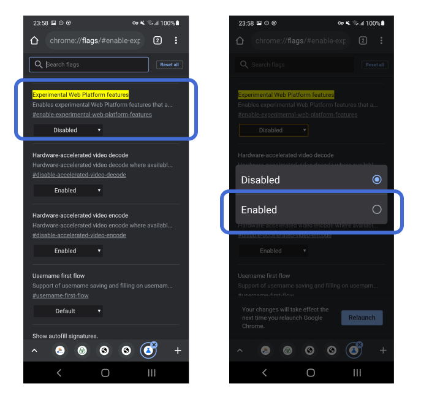
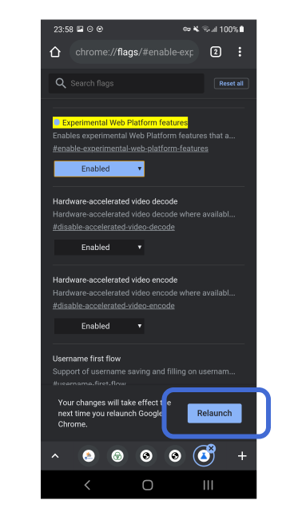

よくあるご質問 ご利用の環境では、本サービスをお使いいただけません。 下記の項目を確認し設定してください。 Android 6.0以降のバージョンが必要です ご利用の環境を、Android 6.0以降にアップグレードしてください。 最新版のChromeが必要です Playストアアプリを開きます。 ［マイアプリ＆ゲーム］をタップします。 ［アップデート］でChromeを探します。 Chromeの横にある［更新］をタップします。 Chromeのテスト中機能を有効にする必要があります アドレス を開きます。 ここをクリックすると、上記のアドレスをクリップボードに格納して新しいウインドウを開くので、アドレス欄に「貼り付け」を行って下さい。 画面に表示される［Experimental Web Platform features］(テスト中機能)を［Enabled］(有効)に変えます。  画面下部に現れる［Relaunch］ボタンをタップします。  Chromeの設定でBluetoothのスキャンを許可する必要があります アドレスバーにある鍵マークをタップして下さい。 ［Bluetoothのスキャン - ブロック中］と表示されている場合には、 ［サイトの設定］をタップしてください。 ［データを削除してリセット］をタップしてください。 ［Bluetoothのスキャン - ブロック中］と表示されていない場合には、 ［戻る］ボタンをタップしてください。 ［…］をタップし［設定］をタップしてください。 ［サイトの設定］をタップしてください。 ［Bluetoothのスキャン］をタップしてください。 スイッチをタップし、［サイトから近くにあるBluetoothデバイスの検出を求められた時に確認する（推奨）］と表示されるようにしてください。 BluetoothをONにして、Chromeに位置情報の利用を許可する必要があります 端末のBluetoothのON/OFFを確認してください。 BluetoothがOFFになっていたらONにしてください。 BluetoothがONになっていたら、Chromeの位置情報利用が許可されていませんので、 Androidの［設定］を開きます。 ［アプリ］を開きます。 ［Chrome］を探して開きます。 ［権限］をタップし、［位置情報］を許可します。 信号の計測回数が少なくなっています この端末にBluetoothで接続している機器（スピーカー、ヘッドセットなど）がある場合は、切断してください。 Bluetoothで接続している機器がないときにもこのエラーが表示される場合は、Bluetoothの計測性能が不足しているため、ご利用の端末ではお使いいただけません。 TOPにもどる
接触確認アプリが 正常に機能しているかを確認しよう。 あなたと、あなたの大切な人を守るために。 ここでは、スマートフォンに入っている「接触確認アプリ（COCOA）」が正常に機能しているかを確認することができます。 確認する 新型コロナウイルス接触確認アプリとは できること 厚生労働省が公式提供する、新型コロナウイルス陽性登録した人との接触をお知らせするアプリです。 本アプリを端末に設定した人どうしの接触（1m以内、15分以上）を記録します。新型コロナウイルスに陽性と判定されたら本アプリに匿名で登録することができます。最近接触した人の中に陽性登録した人がいたら、通知と適切な行動をお知らせします。 ダウンロード Android版 iOS版
Loading... 信号確認の準備ができるまで、 スマホを画面から離してお待ちください。 現在、この周りには約◯台のCOCOA稼働スマホがあります COCOAが、電話番号や位置情報を収集することはありません COCOAは、スマホバッテリーの消費を最小限に抑えています
接触確認アプリが 正常に機能していることを確認しました。 あなたのスマートフォンに入っている「接触確認アプリ（COCOA）」は正常に機能しています。今後もBluetoothをONにした状態で、安全にお過ごしください。 TOPにもどる
接触確認アプリが 正常に機能していることを確認できませんでした。 接触確認アプリがインストールされているか確認してください。 スマートフォンのBluetoothがONになっているか確認してください。 COVID-19 接触通知システムがONになっているか確認してください。 iPhoneの場合 iOS バージョン13.7以降： スマートフォンの［設定］-［接触通知］を開き、［接触のログ記録の状況］をONにしてください。 iOSバージョン13.6以前： スマートフォンの［設定］-［プライバシー］-［ヘルスケア］-［COVID19接触のログ記録］を開き、［接触のログ記録］をONに変更してください。 Androidの場合 スマートフォンの［設定］-［Google］-［COVID-19接触通知システム］を開き、［接触通知システムを使用］をONに変更してください。 TOPにもどる
よくあるご質問 よくあるご質問 Q. 「COCOA動作チェッカー」を使うと何ができますか？ 厚生労働省は新型コロナウイルス感染症の拡大防止のため、陽性者との接触の可能性を確認できるよう、「接触確認アプリ（COCOA）」を開発・運用しています。「COCOA動作チェッカー」は、このアプリ（COCOA）が接触確認のために発信している信号を確認するものです。お客様にアプリの画面を開かせることなく、セルフで確認いただくことができます。 Q. 「COCOA動作チェッカー」を利用するために必要なものは何ですか？ Android 6.0以降のスマートフォンまたはタブレットで動作します。ただし、円滑な動作にはAndroid 8.0以降であることが望ましいです。スマートフォンまたはタブレットのChromeは、最新版に更新してご利用ください。 Q. 「COCOA動作チェッカー」の利用には、費用などがかかりますか？ 「COCOA動作チェッカー」自体は無料で利用することができます。ただし、利用するための機器や、通信にかかる費用は利用者がご負担ください。 Q. 不明点などがある場合には、どこに問い合わせればよいですか？ メールで cocoa-checker@dena.com 宛てにお問い合わせください。対応時間は平日10時～18時となります。 Q. 「COCOA動作チェッカー」の開発に協力したい場合には、どのような手段がありますか？ 「COCOA動作チェッカー」は、オープンソースソフトウェアとして公開しており、github上で issue や pull-request を送ることで貢献いただくことができます。ただし、ツールの性質上、大きな機能拡張は行わない予定であることから、お寄せいただいた pull-request や issue に対して、ご回答できかねる場合がありますことをご了承ください。最新の開発状況は、https://github.com/DeNA/cocoa-checkerから確認することができます。 もどる
ご利用ガイド Q. 「COCOA動作チェッカー」を使うと何ができますか？ 厚生労働省は新型コロナウイルス感染症の拡大防止のため、陽性者との接触の可能性を確認できるよう、「接触確認アプリ（COCOA）」を開発・運用しています。「COCOA動作チェッカー」は、このアプリ（COCOA）が接触確認のために発信している信号を確認するものです。これにより、スマートフォンに入っている「接触確認アプリ（COCOA）」が正常に機能しているかを確認することができます。 Q. どのようにしてCOCOAの動作状況を判断しているのですか？ 「接触確認アプリ（COCOA）」は、1.5m以内に15分以上接近した（濃厚接触と呼びます）相手を判断するために、Bluetoothの信号をスマートフォンでやり取りし、接触の記録を残しています。このツールでは、接触記録を残すための信号を受信できれば、COCOAが動作していると判断しています。 Q. 「COCOA動作チェッカー」は個人情報などの情報を収集していますか？ 「COCOA動作チェッカー」自体は、接触記録の内容を含め、一切の個人情報を収集していません。利用に関するお問い合わせをされる場合には、お問い合わせのメールに記載された情報のみをDeNAのプライバシーポリシーに沿って、お問い合わせへの回答・対応のために利用します。 Q. 「接触確認アプリが正常に機能していることを確認できませんでした」と表示されましたが、どのように対応すればよいですか？ スマートフォンに「接触確認アプリ（COCOA）」がインストールされているか確認してください。 もしインストールされていない場合は、こちらのQRコードからインストールしてください。 Android版 iOS版 スマートフォンのBluetoothがONになっているか確認してください。 COVID-19 接触通知システムがONになっているか確認してください。 iPhoneの場合 iOS バージョン13.7以降： スマートフォンの［設定］-［接触通知］を開き、［接触のログ記録の状況］をONにしてください。 iOSバージョン13.6以前： スマートフォンの［設定］-［プライバシー］-［ヘルスケア］-［COVID19接触のログ記録］を開き、［接触のログ記録］をONに変更してください。 Androidの場合 スマートフォンの［設定］-［Google］-［COVID-19接触通知システム］を開き、［接触通知システムを使用］をONに変更してください。 これらの点を確認しても動作が確認できない場合には、厚生労働省が設けているお問い合わせ窓口までお問い合わせください。お問い合わせ窓口は、厚生労働省のWebページ https://www.mhlw.go.jp/stf/seisakunitsuite/bunya/kenkou_iryou/covid19_qa_kanrenkigyou_00009.html#Q8-1 から確認いただけます。 Q. 不明点などがある場合には、どこに問い合わせればよいですか？ メールで cocoa-checker@dena.com 宛てにお問い合わせください。対応時間は平日10時～18時となります。 もどる
ご利用にあたって このウェブサイト（https://dena.github.io/cocoa-checker/ 以下「当サイト」といいます）は、株式会社ディー・エヌ・エー（以下「当社」といいます）が運営しています。当サイトを利用される前に以下の注意点をお読みいただき、ご了解いただいた上でご利用ください。なお、当社は、当サイトの利用条件を予告なしに変更することがありますので、最新のご利用条件をご確認ください。 1. 免責事項 当社は当サイトに掲載された情報について、その完全性、正確性、確実性、有用性等につきいかなる責任も負わないものとし、当サイトの情報に基づくトラブル・損失・損害等の一切の事項に対して、何らの責任を負いません。また、予告なく当サイトの運営の中断、中止や内容の変更等を行うことがありますが、これらにより生じたいかなるトラブル・損失・損害等に対しても当社は一切責任を負いません。 2. 権利帰属 当サイトに掲載される画像その他の情報等にかかる著作権（著作権法第27条及び第28条に定める権利を含む。以下、同じ。）、産業財産権（その登録を受ける権利を含む。）その他一切の権利は、当社（または当社が定める第三者）に帰属します。事前に当社の書面による承諾を得た場合を除き、法令において認められる範囲や、当サイトのプログラムのライセンスに定める範囲を超えて、これらの情報を利用（複製、翻案、改変、転用、自動公衆送信、アップロード、掲示、送信、頒布、販売、出版、譲渡、貸与を含みますがこれらに限りません。）することは禁止します。また、当サイトをウェブサイト、雑誌書籍、広告などの出版物へ引用転載・掲載をご希望する場合には、当社までその旨をお申出ください。その際、お問い合わせの方のお名前、ご連絡先（住所、電話番号およびメールアドレス）、媒体名、掲載の概要を明記してください。掲載の内容や方法等によっては、引用転載・掲載をお断りすることがありますのでご了承ください。 3. リンクについて 当サイトから、リンクやバナーによって他の外部サイトへ移動できる場合があります。移動された先の外部サイトは当社が運営するものではありません。従って、その内容等につきまして当社は責任を負いかねますのでご了承ください。 4. 推奨環境について ・タブレット／スマートフォン Android 6.0 以上で動作するChrome（最新版） ※推奨環境以外でのご利用や、推奨環境下でもお客様のwebブラウザの設定によっては、ご利用できない、もしくは正しく表示されない場合がございます。その場合はサポート対象外となりますので予めご了承ください。 ■JavaScriptについて 当サイトでは、JavaScriptを使用しています。お使いのブラウザでJavaScript機能を無効にされている場合、当サイトは正しく機能しません。ご覧になる際にはブラウザ設定でJavaScriptを有効にしてください。 ※設定方法は各ブラウザのヘルプをご参照ください。 ■スタイルシートについて 当サイトではスタイルシートを使用しております。お使いのブラウザでスタイルシートを無効にされている場合、正しく表示されません。ご覧になる際にはブラウザ設定でスタイルシートを有効にしてください。 5. お問い合わせ 当サイトについてのお問い合わせは下記にお願いいたします。 COCOA動作チェッカー事務局 cocoa-checker@dena.com ※お手数をお掛けしますが、件名に「【COCOA動作チェッカー】ウェブサイトに関するお問い合わせ」とご記載をお願いいたします。 6.プライバシーポリシー 当サイトでは、当サイトについてのお問い合わせをいただくときに限って、お問い合わせいただいた方の個人情報を収集・利用します。個人情報の収集・利用に関する当社のプライバシーポリシーは下記よりご確認いただけます。 https://dena.com/jp/privacy/ もどる